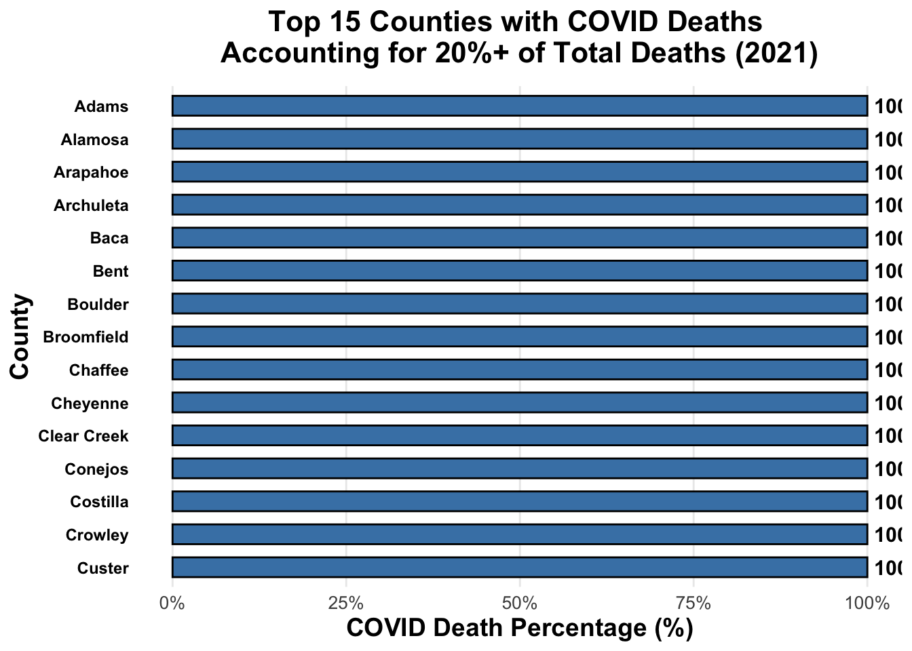
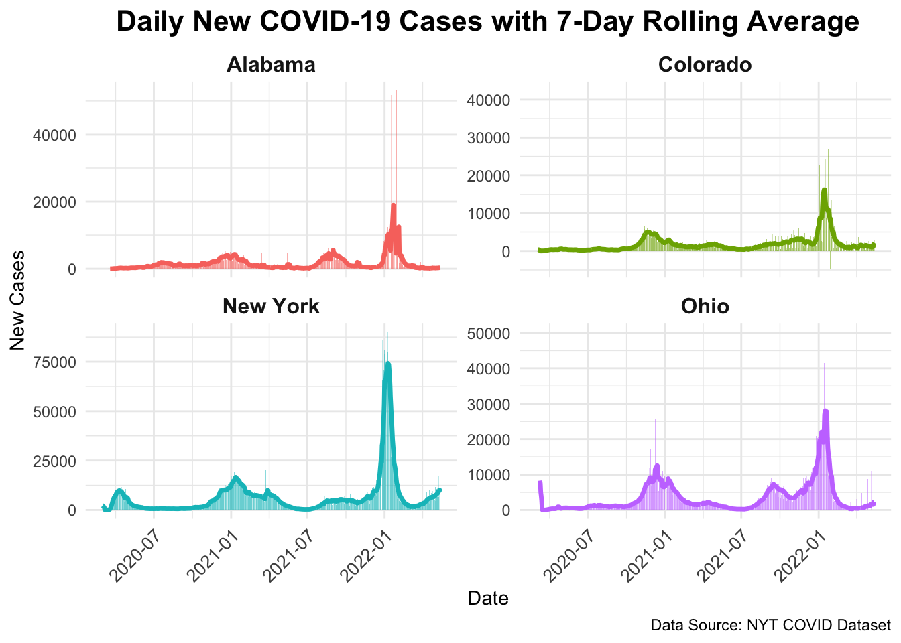
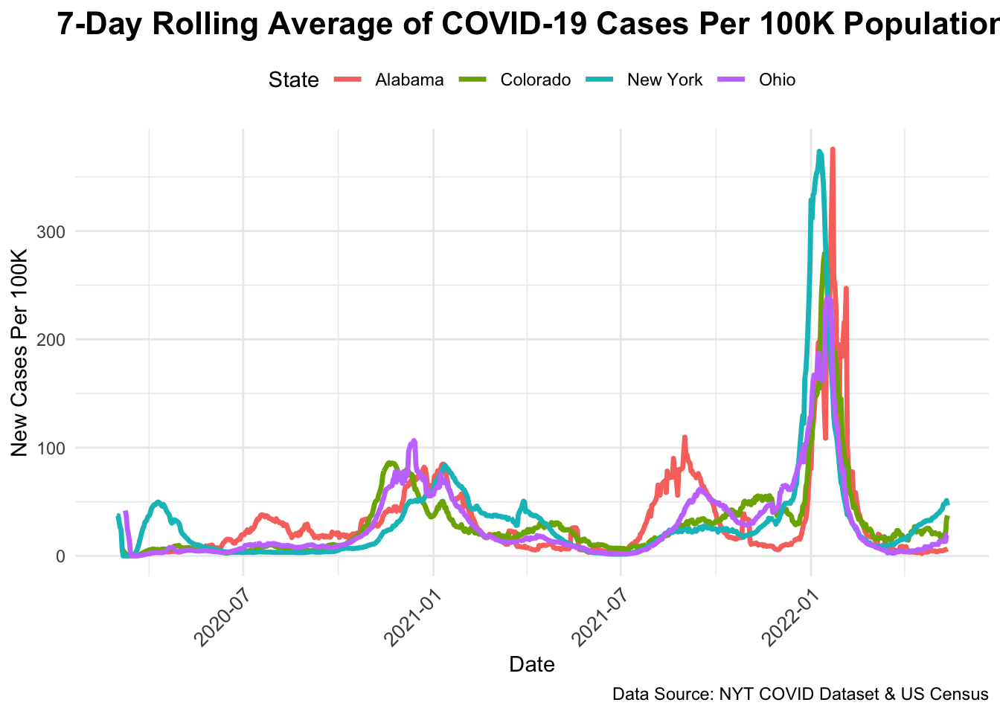
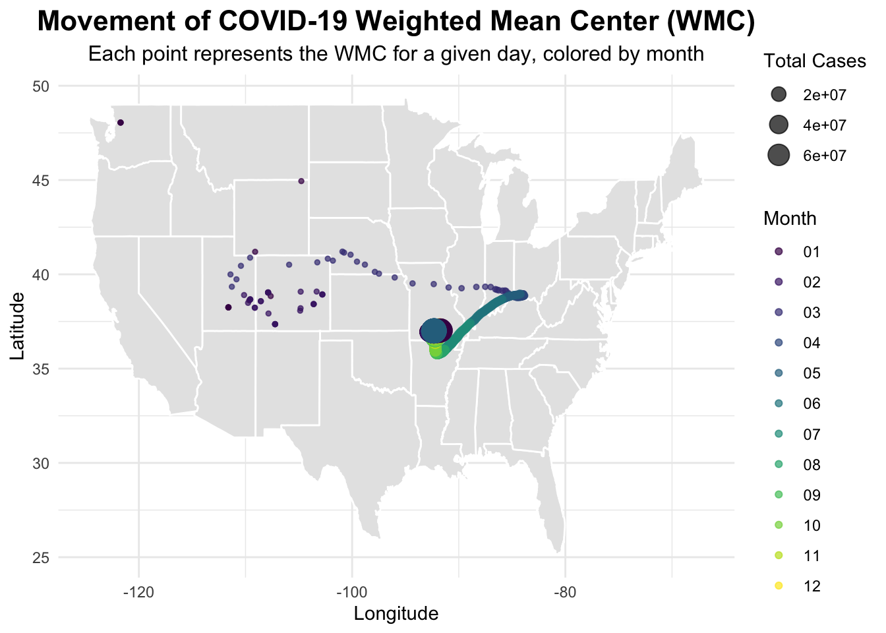

Rows: 2502832 Columns: 6
── Column specification ────────────────────────────────────────────────────────
Delimiter: ","
chr (3): county, state, fips
dbl (2): cases, deaths
date (1): date
ℹ Use `spec()` to retrieve the full column specification for this data.
ℹ Specify the column types or set `show_col_types = FALSE` to quiet this message.
Access to historical and real-time environmental data shapes our understanding of climate trends by allowing scientists to identify patters and correlations, such as increasing temperatures or extreme weather events over decades. It also give us understanding of resource management and allows us to make informed decisions about water usage, crop rotations, and energy allocations. Finally asy access to historical and real-time environmental data gives us undertsanding of public health, by helping us track how a disease spreads, how to inform response measures, and guide vaccination planning.
If this data disappears or becomes inaccessible key insights that inform policy and scientific understanding may be lost, transparency and accountability in environmental and public health initiatives would diminish, and independent verification of trends and historical accuracy would become impossible.
Rows: 3195 Columns: 67
── Column specification ────────────────────────────────────────────────────────
Delimiter: ","
chr (5): SUMLEV, STATE, COUNTY, STNAME, CTYNAME
dbl (62): REGION, DIVISION, ESTIMATESBASE2020, POPESTIMATE2020, POPESTIMATE2...
ℹ Use `spec()` to retrieve the full column specification for this data.
ℹ Specify the column types or set `show_col_types = FALSE` to quiet this message.
population_data <- population_data %>%mutate(STATE_FIPS =str_pad(STATE, 2, pad ="0"),COUNTY_FIPS =str_pad(COUNTY, 3, pad ="0"),FIPS =paste0(STATE_FIPS, COUNTY_FIPS)) %>%select(CTYNAME, POPESTIMATE2021, FIPS, SUMLEV) %>%filter(SUMLEV =="050") # Explore population dataglimpse(population_data)
tibble [64 × 4] (S3: tbl_df/tbl/data.frame)
$ county : chr [1:64] "Adams" "Alamosa" "Arapahoe" "Archuleta" ...
$ total_new_cases : num [1:64] 10527 596 12983 269 85 ...
$ population : num [1:64] NA NA NA NA NA NA NA NA NA NA ...
$ new_cases_per_100k: num [1:64] NA NA NA NA NA NA NA NA NA NA ...
top_counties_14_days <- last_14_days %>%arrange(desc(new_cases_per_100k)) %>%slice_head(n =5)# Print top countiesprint(top_counties_14_days)
# A tibble: 5 × 4
county total_new_cases population new_cases_per_100k
<chr> <dbl> <dbl> <dbl>
1 Adams 10527 NA NA
2 Alamosa 596 NA NA
3 Arapahoe 12983 NA NA
4 Archuleta 269 NA NA
5 Baca 85 NA NA
The following object is masked from 'package:purrr':
discard
The following object is masked from 'package:readr':
col_factor
covid_deaths_2021 <- colorado_data %>%filter(date >=as.Date("2021-01-01") & date <=as.Date("2021-12-31")) %>%group_by(county) %>%summarize(covid_deaths =sum(new_deaths, na.rm =TRUE)) %>%ungroup() total_deaths_data <- colorado_data %>%filter(date >=as.Date("2021-01-01") & date <=as.Date("2021-12-31")) %>%group_by(county) %>%summarize(total_deaths =sum(new_deaths, na.rm =TRUE)) %>%ungroup()covid_deaths_2021 <- covid_deaths_2021 %>%left_join(total_deaths_data, by ="county") %>%mutate(covid_death_percentage = (covid_deaths / total_deaths) *100) %>%filter(!is.na(covid_death_percentage)) covid_deaths_2021 %>%filter(covid_death_percentage >=20) %>%arrange(desc(covid_death_percentage)) %>%# Ensure correct orderslice_head(n =15) %>%# Show only top 15 countiesmutate(county =factor(county, levels =rev(unique(county)))) %>%ggplot(aes(x = county, y = covid_death_percentage)) +geom_bar(stat ="identity", fill ="steelblue", color ="black", width =0.6) +coord_flip() +labs(title ="Top 15 Counties with COVID Deaths \nAccounting for 20%+ of Total Deaths (2021)",x ="County",y ="COVID Death Percentage (%)" ) +scale_y_continuous(labels =percent_format(scale =1), limits =c(0, 100)) +theme_minimal() +theme(panel.grid.major.y =element_blank(),panel.grid.minor =element_blank(),axis.title =element_text(size =14, face ="bold"),axis.text.y =element_text(size =9, face ="bold", color ="black"), axis.text.x =element_text(size =10),plot.title =element_text(face ="bold", hjust =0.5, size =16, margin =margin(b =10)) ) +geom_text(aes(label =sprintf("%.1f%%", covid_death_percentage)), hjust =-0.1, size =4, color ="black", fontface ="bold")

Question 6
library(tidyverse)library(zoo)# Define states of intereststates_of_interest <-c("New York", "Colorado", "Alabama", "Ohio")# Ensure data is sorted before using lag()covid_data <- covid_data %>%arrange(state, county, date) %>%group_by(state, county) %>%mutate(new_cases = cases -lag(cases, default =first(cases))) %>%ungroup()# Aggregate to state levelstate_data <- covid_data %>%filter(state %in% states_of_interest) %>%group_by(state, date) %>%summarize(new_cases =sum(new_cases, na.rm =TRUE), .groups ="drop") %>%mutate(rolling_mean =rollmean(new_cases, 7, fill =NA, align ="right"))# Check outputhead(state_data)
# A tibble: 6 × 4
state date new_cases rolling_mean
<chr> <date> <dbl> <dbl>
1 Alabama 2020-03-13 0 NA
2 Alabama 2020-03-14 5 NA
3 Alabama 2020-03-15 8 NA
4 Alabama 2020-03-16 6 NA
5 Alabama 2020-03-17 8 NA
6 Alabama 2020-03-18 10 NA
ggplot(state_data, aes(x = date, y = new_cases, fill = state)) +geom_col(alpha =0.5) +# Bars for daily casesgeom_line(aes(y = rolling_mean, color = state), size =1.2) +# Rolling mean overlayfacet_wrap(~ state, scales ="free_y") +# Separate plots per statelabs(title ="Daily New COVID-19 Cases with 7-Day Rolling Average",x ="Date",y ="New Cases",caption ="Data Source: NYT COVID Dataset") +theme_minimal() +theme(legend.position ="none",strip.text =element_text(size =12, face ="bold"),plot.title =element_text(size =16, face ="bold", hjust =0.5),axis.text.x =element_text(size =10, angle =45, hjust =1))
Warning: Using `size` aesthetic for lines was deprecated in ggplot2 3.4.0.
ℹ Please use `linewidth` instead.
Warning: Removed 6 rows containing missing values or values outside the scale range
(`geom_line()`).

# Read population datapop_url <-'https://www2.census.gov/programs-surveys/popest/datasets/2020-2023/counties/totals/co-est2023-alldata.csv'pop_data <-read_csv(pop_url) %>%filter(COUNTY =="000") %>%# Keep only state-level rowsmutate(STATE =str_pad(as.character(STATE), 2, pad ="0"),state =case_when( STATE =="36"~"New York", STATE =="08"~"Colorado", STATE =="01"~"Alabama", STATE =="39"~"Ohio" ) ) %>%select(state, POPESTIMATE2021)
Rows: 3195 Columns: 67
── Column specification ────────────────────────────────────────────────────────
Delimiter: ","
chr (5): SUMLEV, STATE, COUNTY, STNAME, CTYNAME
dbl (62): REGION, DIVISION, ESTIMATESBASE2020, POPESTIMATE2020, POPESTIMATE2...
ℹ Use `spec()` to retrieve the full column specification for this data.
ℹ Specify the column types or set `show_col_types = FALSE` to quiet this message.
# Merge COVID data with population datastate_data_pop <- state_data %>%inner_join(pop_data, by ="state") %>%mutate(cases_per_100k = (new_cases / POPESTIMATE2021) *100000,rolling_mean_per_100k =rollmean(cases_per_100k, 7, fill =NA, align ="right") )# Check outputhead(state_data_pop)
# A tibble: 6 × 7
state date new_cases rolling_mean POPESTIMATE2021 cases_per_100k
<chr> <date> <dbl> <dbl> <dbl> <dbl>
1 Alabama 2020-03-13 0 NA 5050380 0
2 Alabama 2020-03-14 5 NA 5050380 0.0990
3 Alabama 2020-03-15 8 NA 5050380 0.158
4 Alabama 2020-03-16 6 NA 5050380 0.119
5 Alabama 2020-03-17 8 NA 5050380 0.158
6 Alabama 2020-03-18 10 NA 5050380 0.198
# ℹ 1 more variable: rolling_mean_per_100k <dbl>
ggplot(state_data_pop, aes(x = date, y = rolling_mean_per_100k, color = state)) +geom_line(size =1.2) +labs(title ="7-Day Rolling Average of COVID-19 Cases Per 100K Population",x ="Date",y ="New Cases Per 100K",color ="State",caption ="Data Source: NYT COVID Dataset & US Census") +theme_minimal() +theme(legend.position ="top",plot.title =element_text(size =16, face ="bold", hjust =0.5),axis.text.x =element_text(size =10, angle =45, hjust =1))
Warning: Removed 6 rows containing missing values or values outside the scale range
(`geom_line()`).

Question 7
library(tidyverse)library(lubridate)# Load county centroid (latitude/longitude) datacounty_centroids_url <-"https://raw.githubusercontent.com/mikejohnson51/csu-ess-330/main/resources/county-centroids.csv"county_locations <-read_csv(county_centroids_url) %>%mutate(FIPS =as.character(fips)) %>%# Ensure FIPS is character type for mergingselect(FIPS, LAT, LON) # Keep relevant columns
Rows: 3221 Columns: 3
── Column specification ────────────────────────────────────────────────────────
Delimiter: ","
chr (1): fips
dbl (2): LON, LAT
ℹ Use `spec()` to retrieve the full column specification for this data.
ℹ Specify the column types or set `show_col_types = FALSE` to quiet this message.
library(ggplot2)ggplot() +borders("state", fill ="gray90", colour ="white") +# Add USA state bordersgeom_point(data = wmc_data, aes(x = WMC_LNG, y = WMC_LAT, color = month, size = total_cases), alpha =0.7) +scale_color_viridis_d() +# Better color scale for monthslabs(title ="Movement of COVID-19 Weighted Mean Center (WMC)",subtitle ="Each point represents the WMC for a given day, colored by month",x ="Longitude",y ="Latitude",color ="Month",size ="Total Cases") +theme_minimal() +theme(plot.title =element_text(size =16, face ="bold", hjust =0.5),plot.subtitle =element_text(size =12, hjust =0.5),legend.position ="right")

Question 8
county_centroids_url <-"https://raw.githubusercontent.com/mikejohnson51/csu-ess-330/main/resources/county-centroids.csv"county_locations <-read_csv(county_centroids_url) %>%mutate(FIPS =as.character(fips)) %>%select(FIPS, lat = LAT, lon = LON)
Rows: 3221 Columns: 3
── Column specification ────────────────────────────────────────────────────────
Delimiter: ","
chr (1): fips
dbl (2): LON, LAT
ℹ Use `spec()` to retrieve the full column specification for this data.
ℹ Specify the column types or set `show_col_types = FALSE` to quiet this message.